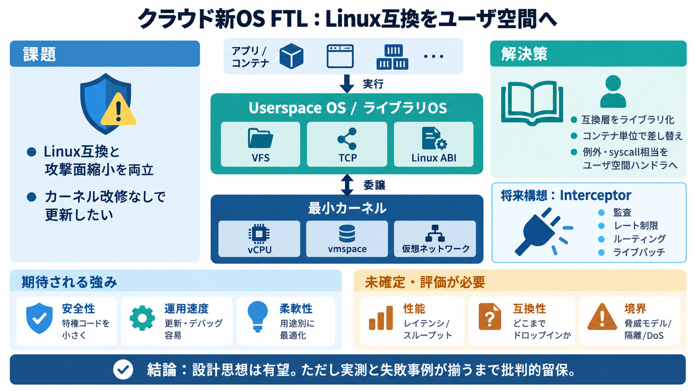

Userfaultfd — The Linux Kernel documentation
For example userfaults allows a proper and more optimal implementation of the `PROT_NONE+SIGSEGV` trick. ## Design¶ Us…

FTL（ftl）は「Linux互換を、OS内部ではなくユーザ空間ライブラリへ寄せる」クラウド向け設計を目指すプロジェクトです。カーネルは最小プリミティブに絞り、運用と拡張を速くする狙いが中心にあります。
Linux互換を提供しつつ、攻撃面（複雑な特権コード）を増やさないことがクラウドでは重要です。OS機能の更新・デバッグ・最適化を、カーネル改修なしで進めたいニーズもあります。
FTLは、小さなカーネルと userspace OS（ライブラリOS）を組み合わせます。カーネルは vCPU / vmspace / 仮想ネットワークのような最小プリミティブに寄せ、Linux実装（例：VFS、TCP）は主にユーザ空間へ移します。
Linux互換は「OS内部の機能追加」ではなく、tier 1 personality（人格）としてライブラリ方式で扱う考え方です。結果として、互換性実装を分離し、多人格化（将来の拡張）に向けやすくします。
FTLでは、Linuxのシステムコール等をカーネルが解釈せず、userspace OS側のハンドラへリダイレクトする思想です。これにより「OSらしい振る舞い」はユーザ空間ライブラリで実装されます。
各コンテナが独立して userspace OS を持つため、機能追加・デバッグ挿入・最適化は「新しいコンテナとして開始」で進めるイメージです。再起動やカーネル変更の局所性が高い可能性が示唆されています。
典型的なハードウェア支援仮想化と異なり、ユーザ空間で例外を捕捉する方針が述べられています。安全性と実装の柔軟性には利点があり得ますが、性能・互換性の成立条件は注意点です。
将来的な拡張として Interceptor（仮）が計画されています。レート制限、セキュリティ監査、ネットワークルーティング、ライブパッチなどを“ミドルウェアのように”組み込み、ランタイムで挙動を制御する構想です。
FTLは gVisor のような“隔離されたアプリケーションカーネル”文脈に似る面がありますが、Linux互換をライブラリOSとして強く重視する点で内部実装は一致しない可能性があります。WSL1やLinuxulator的な「互換層」発想とも関連します。
提示資料は主にコンセプト記述に寄っており、性能・互換性の範囲・セキュリティ境界の評価情報が見当たりにくいです。実運用での信頼性判断には、測定と失敗事例の整理が必要になります。
FTLは「小さなカーネル＋複雑さをユーザ空間へ移す」方向性が筋が良く、クラウドでの攻撃面削減・開発速度・運用柔軟性と整合します。一方で、性能・互換性・セキュリティ境界の材料が不足しており、実測が揃うまで批判的留保が必要です。
FTLのページフォールト実装はここでは踏み込まれていませんが、既存Linux機構として userfaultfd があり、欠落ページ通知やUFFDIO_COPY/UFFDIO_ZEROPAGE等でフォールトを解決する API が知られています。FTLの互換性・例外捕捉方式を評価する際の周辺知識として有用です。
For example userfaults allows a proper and more optimal implementation of the `PROT_NONE+SIGSEGV` trick. ## Design¶ Us…
Andrea talked a bit about the userfaultfd() API, which has evolved in the past months. There is now a set of ioctl() cal…
UFFDIO\_REGISTER\_MODE\_RWP (since Linux 7.2) : When registered with UFFDIO\_REGISTER\_MODE\_RWP mode, user space will…
Userfaultfd is a Linux mechanism, available since kernel 4.3, with additional event features like non-cooperative mode a…
three modes of registration: UFFDIO_REGISTER_MODE_MISSING (since Linux 4.10) When registered with UFFDIO_REGISTER_MODE_M…